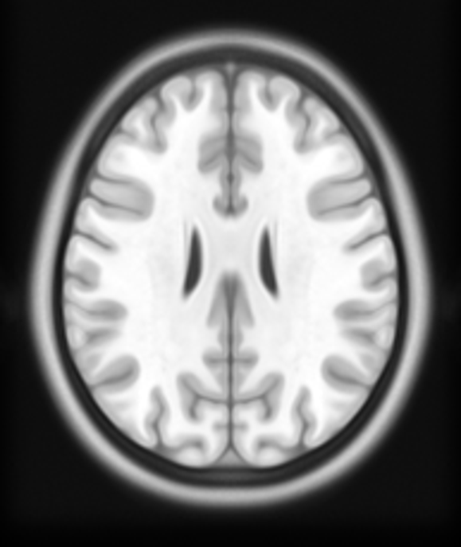

Anatomy Explorer
Study structures on linked axial, coronal and sagittal MRI. Switch to a textbook plate or compare both views in the same workspace.
Open Real MRI Atlas
Planning simulator
Loading real MRI localizers…
Tap to link localizer slices. Drag to move the plan. Yellow shows the selected slice and thickness boundaries. Pink marks the saturation slab.
Educational planning exercise. Real localizers use the bundled volume geometry. The schematic fallback illustrates positioning without physical scale.
Planning prompts
My notes for this anatomy
Type what you learned or what you want to review later. Notes are linked to this anatomy topic.
Recent notes
Anatomy Explorer
Original schematic brain exercise
Interactive anatomy atlas
Tap the structureExplore a sagittal brain schematic. Use labels as hints or hide them to test yourself. Explore all 11 organ systems.
Tap a highlighted region to open its anatomy card.
Select a structure
Each structure has its own description and permanent note category.
My notes on this structure
MRI Physics Lab
Reference + gameLearn what each parameter controls, then test yourself by changing the scanner settings. Educational simplified relationships; clinical behavior depends on sequence and hardware.
| Parameter | What it controls | Typical effect when increased |
|---|---|---|
| TR Repetition time | Time between repeated excitations | Less T1 weighting (in conventional spin echo); longer scan time if other factors fixed |
| TE Echo time | Time from excitation to measured echo | More T2 weighting in spin echo; less signal at long TE |
| TI Inversion time | Delay after inversion pulse | Changes the tissue that is nulled; not simply “more contrast” |
| Flip angle | RF rotation of magnetization | Alters signal and contrast, especially in GRE; effects depend on TR and tissue |
| NEX / NSA | Number of signal averages | SNR ≈ √NEX; scan time usually increases proportionally |
| FOV | Physical coverage of image | Larger pixels and usually higher SNR if matrix fixed; lower in-plane resolution |
| Matrix | Sampling dimensions | Smaller pixel size and higher potential spatial resolution when FOV fixed; lower SNR |
| Slice thickness | Through-plane voxel size | More SNR, more partial-volume averaging, less through-plane detail |
| Bandwidth | Receiver frequency range per pixel | Less chemical shift and usually less SNR; can permit shorter echo spacing |
Tap a row to attach notes to that parameter.
Adjust the parameters to solve the question.
Conceptual contrast predictor
The bars are a schematic learning aid, not signal calculations or diagnostic image predictions. TI/flip angle behavior varies by pulse sequence.
My physics notes
Physics Sandbox
Live trade-offsExperiment freely with a simplified 2D spin-echo acquisition model. Change parameters to see relative signal-to-noise ratio (SNR), voxel geometry, in-plane resolution and estimated acquisition time. Comparison starts from the reference preset; no scanner images are generated.
What changed?
Relaxation and signal
The curves use illustrative white-matter relaxation times. The TR and TE controls move their markers. The signal estimate below assumes ideal spin echo and equal equilibrium magnetization.
The field selector changes the proton Larmor frequency. The illustrative tissue relaxation times are fixed to isolate the effect of TR and TE.
My sandbox notes
Educational approximation, not a Bloch-equation or scanner simulator. SNR proxy assumes equal coil/field/tissue factors and scales roughly with voxel volume × √NEX ÷ √bandwidth. This deliberately omits TR/TE tissue dependence, coil sensitivity, noise correlations and many acquisition details. Scan time assumes simple 2D phase encoding with no overhead, parallel imaging or partial Fourier; ETL affects both timing and contrast/blurring in practice. Larger in-plane detail score means smaller pixels, not guaranteed image quality.
Protocol Builder — Slice Stack
Interactive trainingPick anatomy and a target plane. Drag the green slice stack directly on the image, rotate it, set slice coverage and thickness, then check your plan. The background is a teaching schematic until you load a licensed MRI reference image. Movement is educational and does not implement full DICOM geometry.
Select multiple .dcm files from one image series. Files are read locally and never uploaded by this app.
No DICOM files loaded.
Supported now: standard uncompressed, single-frame or multiframe, 8/16-bit monochrome DICOM with little-endian transfer syntax. JPEG/JPEG 2000, RLE, enhanced multi-frame variants with unusual metadata and DICOMDIR require a full imaging decoder. Series ordering is based on position/instance; images remain in memory unless you save a slice snapshot. Do not use identifiable patient scans.
Use an image you have permission to reuse. Imported images are stored on this device in IndexedDB where available; they are not included in JSON note backups.
Planning target
Pre-study Recall Quiz
Spaced review starterBefore studying new content, answer a short question from anatomy and MRI physics. Previously visited note topics receive extra priority. Missed questions are stored locally to be reviewed again; this is a lightweight practice mode, not a complete adaptive learning system.
Tap Start to review what you know.
Review from your own notes
Your latest saved note becomes a recall prompt. Your notes are not automatically treated as medically verified answers.
My MRI notebook
Your notes stay grouped by anatomy and available for later review in this browser, subject to the device's local storage retention. Export backups regularly.
Atlas bookmarks
Atlas and system notes
Settings
MRI downloads and sources
Backups
Use Export backup to save your notebook, quiz history, registry sessions, continuous practice, lesson progress, scan notes, and atlas drawings as a JSON file in the iPad Files app. You can merge it into your study data later using Import backup. Scan downloads and the saved protocol reference image are managed separately.
Offline and iPad instructions
On iPad, open the site in Safari and use Share, then Add to Home Screen. Open the installed app once online and download the MRI packs you want. Notes and image packs are stored in the browser or installed app.
Note storage may disappear after clearing browser data, using private browsing, switching app/browser, or opening the HTML from a different file location. Export backups before doing any of those things.